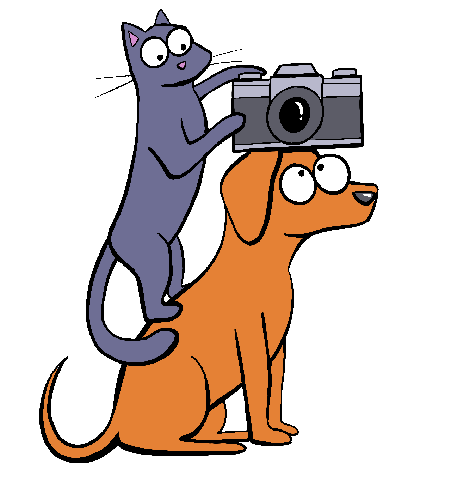

I'm a Photographer in Flintshire who loves capturing pictures of animals. For many years I've enjoyed Photography and I've previously covered Weddings and Portraits, however after recently helping at a local charity event to raise money for rescue dogs it ignited a desire to do more with pets, especially our cherished canines. There is something so spontaneous and wholesome about our beloved companions, how could I not!

amanda@ajpawtraits.net